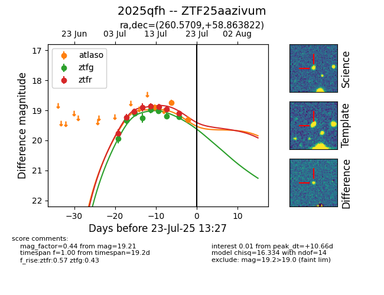

Target ZTF25aazivum at 2025-07-23 13:27, see:
FINK: fink-portal.org/ZTF25aazivum
Lasair: lasair-ztf.lsst.ac.uk/objects/ZTF25aazivum
ALeRCE: alerce.online/object/ZTF25aazivum
TNS: wis-tns.org/object/2025qfh
YSE: ziggy.ucolick.org/yse/transient_detail/2025qfh
alt names
ZTF25aazivum (ztf,fink)
2025qfh (tns,yse)
coordinates:
equatorial (ra, dec) = (260.5709,+58.86382)
galactic (l, b) = (87.4966,+34.39063)
photometry
last atlaso=19.30, ztfg=19.21, ztfr=19.10
3 atlaso, 8 ztfg, 8 ztfr detections
